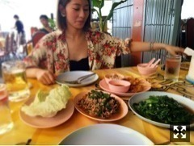
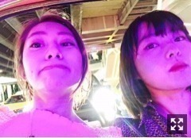

ご無沙汰しています！
先日、玲香とタイに行ってました。
手続きやトラブルの対処を
玲香がぜんぶやってくれた、、
誕生日お祝いできてよかったよ！
リアルに今まででいちばん嬉しい
誕生日お祝いだったって言ってくれたよ〜
リアルにありがとう

↑昼からビール飲む人
やっぱり好きな料理は
ラープガイと空芯菜とグリーンカレーだなー
玲香が先に帰国後、
あと二日間一人で過ごしてました。
タクシーにwifi置き忘れて
見つかったと思ったら次は
別のタクシーでケータイを置き忘れる
という事態が起きて。
自分の間抜けさを痛感したのでした！
今日は人差し指火傷して、
そんな見た目わからないけど
なんかずっとヒリヒリしてて結構痛い。
ちなみにまるごと新玉ねぎスープ作りました。
つくったというレンジでチンしただけ、、
まじで痛い、、美味しかった、

『GRAVITY DAZE 2』の｢重力猫映像｣が
広告賞｢ONE SHOW 2017｣で
すごいすごいすごい。
超おめでとうございます！！！！！！
ゲームと共に作品がこんなかたちで
広がっているなんてとても嬉しい気持ちです。
猫、いつ見てもわくわくします、、
ついていきたいと心から思いますやはり。
この際だからぜひご視聴ください。
Play with Gravity
まりか